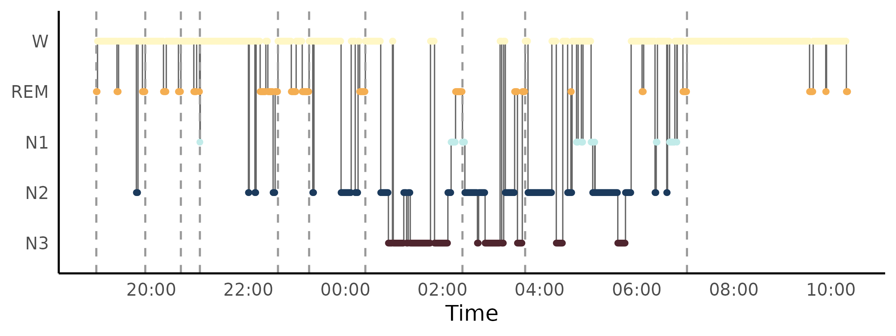
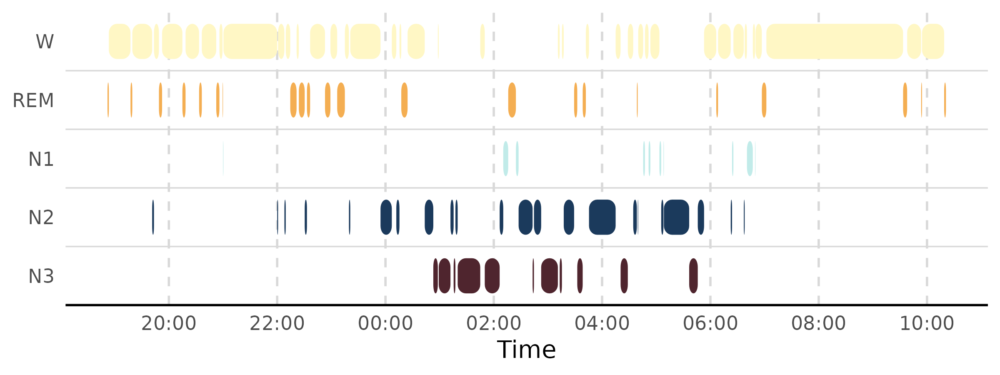
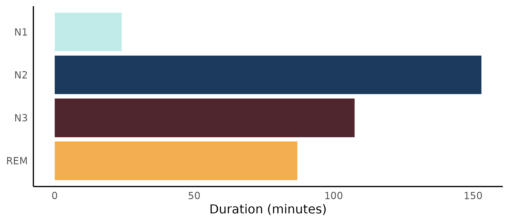
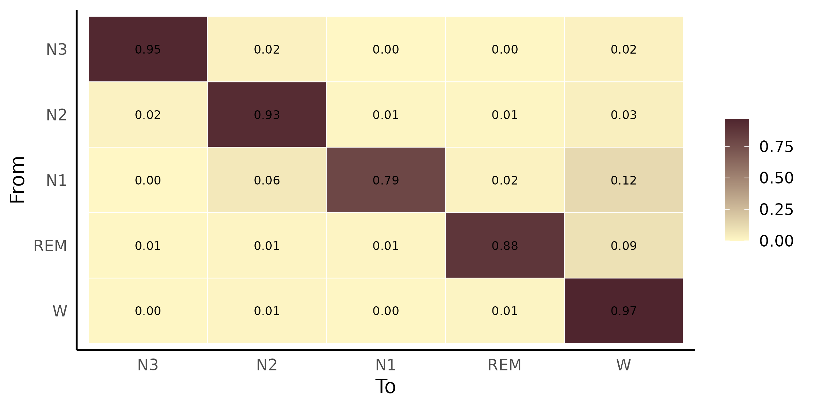
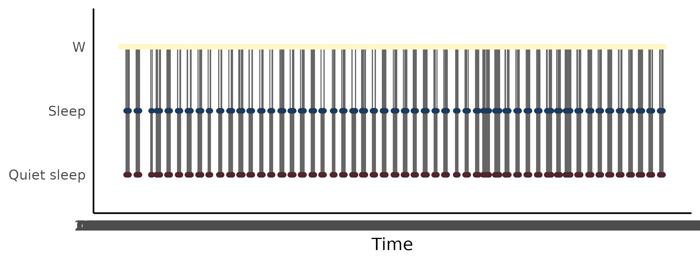
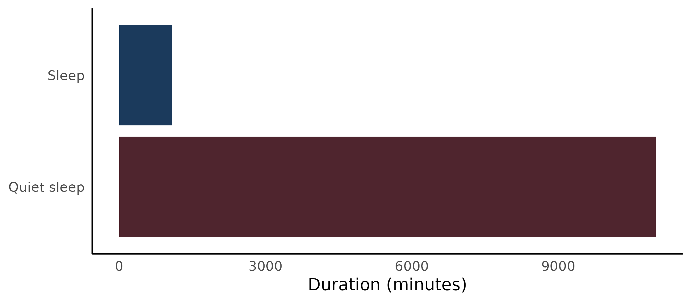

Overview
hypnoR is the hypnogram layer of the Circadia Lab R
ecosystem. It takes a staged hypnogram from anywhere –
mrpheus (full AASM: W / N1 /
N2 / N3 / REM),
zeitR (coarse actigraphy-derived: W /
Sleep / Quiet sleep), or a hand-built tibble –
and turns it into sleep architecture metrics, NREM/REM cycles,
transition statistics, and publication-ready plots.
Every metric and plotting function is
staging-agnostic: it computes whatever is possible
given the resolution actually present, and returns NA
(documented per-function) for metrics that need finer staging than
what’s available.
This article walks through the whole pipeline using a real recording:
mrpheus’s bundled SC4001E0 example – a 22-hour Sleep-EDF
cassette recording, already staged by mrpheus’s automatic sleep-staging
model.
From mrpheus to hypnoR
staging <- readRDS(system.file("extdata", "SC4001E0_staging.rds", package = "mrpheus"))
staging |>
head()
#> # A tibble: 6 × 7
#> epoch stage prob_N1 prob_N2 prob_N3 prob_REM prob_W
#> <int> <chr> <dbl> <dbl> <dbl> <dbl> <dbl>
#> 1 1 W 0.111 0.00803 0.00192 0.0335 0.846
#> 2 2 W 0.00878 0.0121 0.00364 0.00233 0.973
#> 3 3 W 0.00261 0.00409 0.00178 0.00269 0.989
#> 4 4 W 0.0621 0.0575 0.00901 0.0220 0.849
#> 5 5 W 0.102 0.143 0.0260 0.0845 0.644
#> 6 6 W 0.00921 0.0110 0.0137 0.00935 0.957staging is mrpheus’s raw per-epoch output: one row per
30-second epoch, an AASM stage label, and five posterior
probabilities from the underlying LightGBM classifier.
mrpheus::export_hypnogram() prepares it for hypnoR:
mrp_hyp <- mrpheus::export_hypnogram(
staging,
epoch_s = 30,
start_time = as.POSIXct("2024-01-01 16:13:00", tz = "UTC"),
participant_id = "SC4001"
)
#> ✔ Hypnogram ready: 2650 epochs. Pass to `hypnor::new_hypnogram()` once hypnor is available.(The real recording start time comes from the EDF header at
mrpheus::read_edf() time; the bundled .rds
doesn’t carry it, so we use a placeholder here based on the note in
mrpheus’s own sleep-staging-demo article that the cassette
started around 16:13 local time.)
new_hypnogram() – the constructor every other hypnoR
function goes through – accepts this directly:
hyp <- new_hypnogram(mrp_hyp)
hyp
#>
#> ── hypnoR hypnogram ────────────────────────────────────────────────────────────
#> ℹ Epochs: 2650
#> ℹ Epoch length: 30 s
#> ℹ Resolution: aasm
#> ℹ Subject: SC4001
#> # A tibble: 2,650 × 5
#> epoch time stage subject_id source
#> * <int> <dttm> <ord> <chr> <chr>
#> 1 1 2024-01-01 16:13:00 W SC4001 mrpheus
#> 2 2 2024-01-01 16:13:30 W SC4001 mrpheus
#> 3 3 2024-01-01 16:14:00 W SC4001 mrpheus
#> 4 4 2024-01-01 16:14:30 W SC4001 mrpheus
#> 5 5 2024-01-01 16:15:00 W SC4001 mrpheus
#> 6 6 2024-01-01 16:15:30 W SC4001 mrpheus
#> 7 7 2024-01-01 16:16:00 W SC4001 mrpheus
#> 8 8 2024-01-01 16:16:30 W SC4001 mrpheus
#> 9 9 2024-01-01 16:17:00 W SC4001 mrpheus
#> 10 10 2024-01-01 16:17:30 W SC4001 mrpheus
#> # ℹ 2,640 more rowsStaging resolution (aasm here, since N1 /
N2 / N3 / REM are present) and
epoch duration are auto-detected and stored as attributes on
hyp – every other hypnoR function reads them from there
rather than asking you to repeat yourself.
Preprocessing
Two optional cleanup steps happen before any metric sees the hypnogram.
Smoothing
Automatic per-epoch staging with no temporal continuity constraint –
as here – can produce brief, isolated stage flips that don’t reflect
real sleep physiology (a single REM epoch nested inside an N2 run, for
instance). smooth_hypnogram() offers two label-only
rules:
hyp_smooth <- smooth_hypnogram(hyp, method = c("aasm_isolated", "min_run"), min_run_epochs = 4)
mean(hyp_smooth$stage != hyp_smooth$stage_raw)
#> [1] 0.1283019aasm_isolated reassigns a single epoch flanked
identically on both sides; min_run merges any run shorter
than min_run_epochs into whichever flanking run is longer,
regardless of whether the flanks agree. The original, unsmoothed labels
are always preserved in stage_raw for comparison.
Windowing
SC4001 is a 22-hour ambulatory recording – most of it is
ordinary daytime Wake before and after the one real sleep period.
Running metrics over the entire recording would badly distort
things like sleep onset latency and NREM/REM cycle counts, so
window_hypnogram() restricts a hypnogram to a time or epoch
window before any metric sees it:
sleep_idx <- which(as.character(hyp_smooth$stage) != "W")
onset_epoch <- hyp_smooth$epoch[sleep_idx[1]]
offset_epoch <- hyp_smooth$epoch[sleep_idx[length(sleep_idx)]]
hyp_sleep <- window_hypnogram(hyp_smooth, from_epoch = onset_epoch, to_epoch = offset_epoch)
nrow(hyp_sleep)
#> [1] 1858compute_sleep_architecture() also accepts
lights_off/lights_on directly and windows
internally, if you’d rather pass real lights-off/on timestamps than
derive a window from the data itself.
Sleep architecture
arch <- compute_sleep_architecture(hyp_sleep)
arch
#> # A tibble: 1 × 14
#> tst_min tib_min se_pct sol_min waso_min rem_lat_min sws_lat_min pct_n1 pct_n2
#> <dbl> <dbl> <dbl> <dbl> <dbl> <dbl> <dbl> <dbl> <dbl>
#> 1 372. 929 40.0 0 558. 0 361 6.46 41.2
#> # ℹ 5 more variables: pct_n3 <dbl>, pct_rem <dbl>, pct_sleep <dbl>,
#> # pct_quiet_sleep <dbl>, staging_resolution <chr>Stage transitions
trans <- compute_transitions(hyp_sleep)
trans$matrix
#> # A tibble: 5 × 6
#> from N3 N2 N1 REM W
#> <chr> <dbl> <dbl> <dbl> <dbl> <dbl>
#> 1 N3 0.949 0.0233 0 0.00465 0.0233
#> 2 N2 0.0196 0.928 0.00980 0.00980 0.0327
#> 3 N1 0 0.0625 0.792 0.0208 0.125
#> 4 REM 0.00578 0.0116 0.0116 0.879 0.0925
#> 5 W 0.00359 0.0108 0.00448 0.0143 0.967
trans$fragmentation
#> # A tibble: 1 × 3
#> n_transitions fragmentation_index wake_transitions
#> <int> <dbl> <int>
#> 1 101 0.0544 37NREM/REM cycles
cyc <- compute_cycles(hyp_sleep, method = "aasm")
cyc
#> # A tibble: 10 × 6
#> cycle start_epoch end_epoch nrem_min rem_min cycle_min
#> <int> <int> <int> <dbl> <dbl> <dbl>
#> 1 1 319 439 57 3.5 60.5
#> 2 2 440 527 37.5 6.5 44
#> 3 3 528 574 19.5 4 23.5
#> 4 4 575 767 79.5 17 96.5
#> 5 5 768 844 24 14.5 38.5
#> 6 6 845 983 62.5 7 69.5
#> 7 7 984 1223 112. 8.5 120
#> 8 8 1224 1378 70.5 7 77.5
#> 9 9 1379 1778 195 5 200
#> 10 10 1779 2090 152. 4.5 156Plotting
Two hypnogram styles are available. "step" (the default)
is the classic clinical trace:
plot_hypnogram(hyp_sleep, cycles = cyc)
"capsule" draws rounded-pill bars per contiguous stage
run, one lane per stage:
plot_hypnogram(hyp_sleep, style = "capsule")
plot_architecture(arch)
plot_transition_matrix(trans$matrix)
Coarse hypnograms from zeitR
Everything above works identically on coarse, actigraphy-derived
staging – that’s the whole point of “staging-agnostic.”
zeitR ships a bundled ActTrust validation recording;
running its full rest-activity pipeline and exporting produces a coarse
(W / Sleep / Quiet sleep)
hypnogram:
result <- zeitR::run_pipeline(
system.file("extdata", "input1.txt", package = "zeitR"),
tz = "UTC",
quiet = TRUE
)
zeitr_hyp <- zeitR::export_hypnogram(result)
hyp_coarse <- new_hypnogram(zeitr_hyp)
hyp_coarse
#> # A tibble: 76,196 × 5
#> epoch time stage subject_id source
#> * <int> <dttm> <ord> <chr> <chr>
#> 1 1 2021-05-27 11:10:15 W input1 zeitR
#> 2 2 2021-05-27 11:11:15 W input1 zeitR
#> 3 3 2021-05-27 11:12:15 W input1 zeitR
#> 4 4 2021-05-27 11:13:15 W input1 zeitR
#> 5 5 2021-05-27 11:14:15 W input1 zeitR
#> 6 6 2021-05-27 11:15:15 W input1 zeitR
#> 7 7 2021-05-27 11:16:15 W input1 zeitR
#> 8 8 2021-05-27 11:17:15 W input1 zeitR
#> 9 9 2021-05-27 11:18:15 W input1 zeitR
#> 10 10 2021-05-27 11:19:15 W input1 zeitR
#> # ℹ 76,186 more rowsResolution is auto-detected as coarse (no
N1/N2/N3/REM labels
present), and every metric function adapts automatically – no separate
“coarse mode” argument anywhere:
arch_coarse <- compute_sleep_architecture(hyp_coarse)
arch_coarse
#> # A tibble: 1 × 14
#> tst_min tib_min se_pct sol_min waso_min rem_lat_min sws_lat_min pct_n1 pct_n2
#> <dbl> <dbl> <dbl> <dbl> <dbl> <dbl> <dbl> <dbl> <dbl>
#> 1 12078. 38098 31.7 376 25554 NA NA NA NA
#> # ℹ 5 more variables: pct_n3 <dbl>, pct_rem <dbl>, pct_sleep <dbl>,
#> # pct_quiet_sleep <dbl>, staging_resolution <chr>Notice rem_lat_min, sws_lat_min, and the
AASM stage percentages
(pct_n1/pct_n2/pct_n3/pct_rem)
are all NA – they need finer staging than three states can
provide – while pct_sleep/pct_quiet_sleep are
populated instead. compute_transitions() works exactly the
same way, just over a 3x3 matrix instead of 5x5:
trans_coarse <- compute_transitions(hyp_coarse)
trans_coarse$matrix
#> # A tibble: 3 × 4
#> from `Quiet sleep` Sleep W
#> <chr> <dbl> <dbl> <dbl>
#> 1 Quiet sleep 0.926 0.0655 0.00814
#> 2 Sleep 0.630 0.219 0.151
#> 3 W 0.00500 0.00469 0.990compute_cycles() is the one function that’s genuinely
AASM-only – NREM/REM cycle segmentation needs a REM stage to segment on,
so it errors clearly rather than silently returning nonsense:
compute_cycles(hyp_coarse)
#> Error in `compute_cycles()`:
#> ! `compute_cycles()` requires a full AASM hypnogram.
#> ✖ `hypnogram` has "coarse" resolution (no REM stage), so NREM/REM cycles cannot
#> be detected.Plotting works identically too, with a 3-lane layout instead of 5:
plot_hypnogram(hyp_coarse)
plot_architecture(arch_coarse)
What isn’t here yet
read_hypnogram() – ingesting hypnograms directly from
CSV, EDF annotations, YASA, Compumedics, or Nox export files – is still
under development. For now, hypnograms come from an upstream package
(mrpheus::export_hypnogram(),
zeitR::export_hypnogram()) or a hand-built tibble passed to
new_hypnogram(), as shown above.
See vignette("mrpheus-integration", package = "hypnoR")
and vignette("zeitR-integration", package = "hypnoR") (or
the “Worked examples” section of the pkgdown site) for deeper,
warts-and-all walks through cleaning up and interpreting real staging
output from each source.